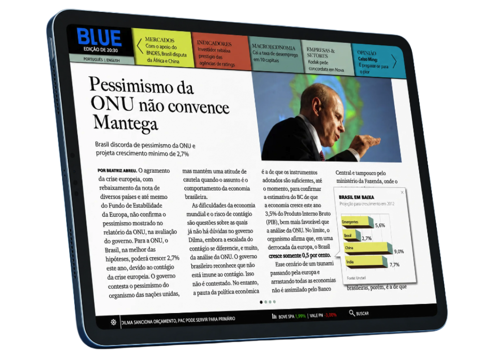

Role Interface design and prototype
Period 2010
Blue was created in 2010, when the tablet was still an emerging consumer platform. Rather than treat the device as a smaller desktop, the project asked: what changes when people navigate information primarily with their hands?
The context
Financial news is continuous, dense, and time-sensitive. A touch device introduced different constraints from desktop: direct manipulation, changing orientation, less visible navigation chrome, and a stronger relationship between gesture and spatial movement.
The interaction hypothesis
We explored gesture-based navigation and card-like structures for moving through the news stream. The goal was to create a spatial model people could understand through touch rather than reproduce the desktop interface.
Designing before the pattern library existed
Today cards, swipes, touch targets, and responsive information blocks are ordinary vocabulary. At the time those conventions were still being negotiated. Blue was R&D as much as interface design: prototype, understand the medium, and establish useful patterns rather than wait for mature conventions to copy.
Why it still matters
The visual language belongs to 2010. The product question does not: understand the capabilities and constraints of the platform, then design behavior around people rather than around the previous technology.